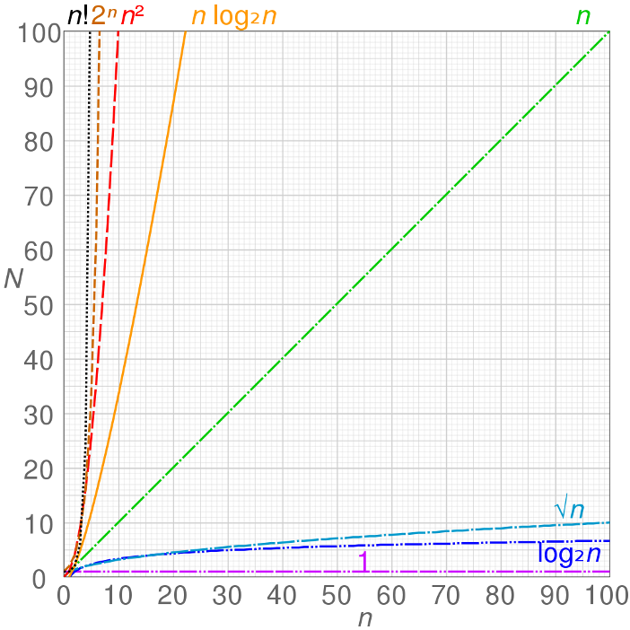

What problem are we solving?
Different algorithms can solve the same task (searching, sorting, etc.).
We want a fair comparison that does not depend on a specific machine.
We care about how runtime/memory grows as input size grows.
Example question: If the input size doubles, does time double, quadruple, or barely change?
Learning goals
Explain empirical vs theoretical analysis
Define the model: T(N) and S(N)
Count operations carefully
Use O, Ω, Θ correctly
Analyze examples: linear search, binary search, selection sort
Big picture
Pick a meaningful input size \(N\)
Write a cost function: \(T(N)\) (time), sometimes \(S(N)\) (space)
Count operations precisely, then simplify
Report growth using asymptotic notation
Empirical analysis (measure it)
Implement the algorithm, run it, and time it.
Pros: real measurements, easy to demo.
Cons: depends on hardware, compiler, OS, cache, and input choices.
C++ timing sketch:
#include <chrono>
using clock = std::chrono::high_resolution_clock;
auto start = clock::now();
// run algorithm
auto stop = clock::now();
auto ms = std::chrono::duration_cast<std::chrono::milliseconds>(stop - start).count();
std::cout << ms << " ms\n";Theoretical analysis (reason about it)
Estimate the cost without running the program.
Count how many basic steps the algorithm does as \(N\) grows.
Hardware independent: focuses on the algorithm itself.
Outcome: a function like \(T(N)\), then a growth class like \(O(N \log N)\).
What is the input size \(N\)?
\(N\) must match the problem:
array algorithms: \(N\) = number of elements
string algorithms: \(N\) = number of characters
graphs: sometimes two parameters (\(V\) vertices, \(E\) edges)
Choosing \(N\) correctly is step 1 of analysis.
Define \(T(N)\) and \(S(N)\)
\(T(N)\) = time cost as a function of input size \(N\)
\(S(N)\) = extra space cost as a function of input size \(N\)
We will talk about \(T(N)\) most of the time, but space matters too.
Note: \(T(N)\) is often a count like comparisons or loop iterations, not wall-clock time.
What counts as a “basic step”?
We approximate by counting constant-time operations (each is \(O(1)\)).
assignment:
x = 10arithmetic (fixed-size ints):
x + y,x * ycomparison:
a > b,a == barray indexing:
arr[i]
Not constant: loops, recursion, or operations that scale with data (e.g., copying a long string).
What we do in practice
Write \(T(N)\) as an exact expression first (example: \(3N + 3\)).
Then simplify to focus on growth (example: \(\Theta(N)\)).
We will do both: exact counting and asymptotic simplification.
Best / worst / average case
Best case: minimum work for inputs of size \(N\)
Worst case: maximum work for inputs of size \(N\)
Average case: expected work (needs an input distribution assumption)
Example (linear search): best = found immediately, worst = not found or last element.
Bounds (O, Ω, Θ) are different
Cases describe which inputs we consider.
Bounds describe how we describe growth of \(T(N)\).
Workflow: choose a case → derive \(T(N)\) → then express growth using O/Ω/Θ.
Why asymptotic notation?
Exact \(T(N)\) can be messy (constants and low-order terms).
We want the dominant growth as \(N\) becomes large.
Big-O, Big-Ω, Big-Θ (intuition)
\(O(f(N))\): an upper bound (grows no faster than \(f(N)\), up to constants)
\(\Omega(f(N))\): a lower bound (grows at least as fast as \(f(N)\), up to constants)
\(\Theta(f(N))\): a tight bound (both an upper and lower bound)
We will usually: compute an exact (or nearly exact) \(T(N)\), then summarize it with \(O\), \(\Omega\), or \(\Theta\).
Common growth classes
\(O(1)\): constant
\(O(\log N)\): logarithmic
\(O(N)\): linear
\(O(N \log N)\): linearithmic
\(O(N^2)\): quadratic
\(O(2^N)\): exponential
Notice how quickly \(N^2\) and \(2^N\) grow.

Key simplification rules
Drop constants: \(7N + 3 \in \Theta(N)\)
Keep dominant term: \(N^2 + 100N + 5 \in \Theta(N^2)\)
\(\log_a N\) vs \(\log_b N\): same growth (constant factor difference)
We still start with careful counting so you understand where the formula comes from.
The standard for-loop pattern
for (int i = 0; i < N; ++i) {
// body
}Count these parts separately:
Initialization:
int i = 0Condition check:
i < NBody: executes some statements
Increment:
++i
Why does the condition run \(N+1\) times?
Before the first iteration, we check:
i < N(1st check)Each iteration ends with
++i, then we check againAfter the \(N\)-th iteration,
ibecomes \(N\), we check one more time and fail
Exact count example (body is constant)
int sum = 0; // (A)
for (int i = 0; i < N; ++i) { // (B)
sum += 1; // (C)
}Count operations (one reasonable model):
(A) assignment: 1
(B) init: 1
(B) condition
i < N: \(N+1\)(C) body statement: \(N\)
(B) increment
++i: \(N\)
So \(T(N) \in \Theta(N)\).
General template for a single loop
T(N) = init
+ condition_checks
+ increments
+ body_cost_per_iter * #iterationsFor a typical loop with \(N\) iterations:
condition checks: \(N+1\)
increments: \(N\)
body: \(N \cdot (\text{cost per iteration})\)
The +1 matters for understanding, even though we often drop it at the end.
Nested loops: count inner work for each outer iteration
for (int i = 0; i < N; ++i) {
for (int j = 0; j < N; ++j) {
// constant work
}
}Inner loop does about \(N\) iterations for each outer iteration.
Outer loop does \(N\) iterations.
Total body executions: \(N \cdot N = N^2\).
If you want exact checks, each loop has \((N+1)\) condition checks. Understand it first, then simplify to \(\Theta(N^2)\).
Logarithmic loops (why \(\log N\) appears)
int x = N;
while (x > 1) {
x = x / 2;
}Each iteration halves \(x\): \(N \to N/2 \to N/4 \to \cdots \to 1\)
How many times can we divide by 2 until we reach 1?
So \(T(N) \in \Theta(\log N)\).
Linear search (idea)
Scan elements left to right until you find the key or run out of elements.
Best case: key is at index 0 ⇒ about 1 comparison ⇒ \(T(N) \in \Theta(1)\)
Worst case: key is last or not present ⇒ about \(N\) comparisons ⇒ \(T(N) \in \Theta(N)\)
Average case: depends on distribution; usually still \(\Theta(N)\)
Linear search (code + what we count)
int linearSearch(const int* arr, int size, int key) {
for (int i = 0; i < size; ++i) {
if (arr[i] == key) return i;
}
return -1;
}Input size: \(N = \text{size}\)
Main cost: how many times we execute
arr[i] == keyWorst-case comparisons: \(N\)
Binary search (idea)
Works only on a sorted array.
Each step checks the middle and halves the search range.
So the problem size shrinks like: \(N, N/2, N/4, \dots\)
Worst-case steps is about how many times you can halve \(N\) until it becomes 1: \(\Theta(\log N)\).
Binary search (code)
int binarySearch(const int* arr, int size, int key) {
int low = 0, high = size - 1;
while (low <= high) {
int mid = low + (high - low) / 2;
if (arr[mid] < key) low = mid + 1;
else if (arr[mid] > key) high = mid - 1;
else return mid;
}
return -1;
}Worst-case loop iterations: \(\Theta(\log N)\)
Each iteration does constant work ⇒ \(T(N) \in \Theta(\log N)\)
Binary search as a recurrence (optional math view)
In the worst case, each step halves the remaining elements:
Stop when \(N/2^k \le 1\):
So \(T(N) \in \Theta(\log N)\).
Selection sort (what it does)
For each position \(i\), find the smallest element in the remaining unsorted part.
Swap it into position \(i\).
Repeat until sorted.
Selection sort (code)
void selectionSort(int* arr, int size) {
for (int i = 0; i < size - 1; ++i) {
int min = i;
for (int j = i + 1; j < size; ++j) {
if (arr[j] < arr[min]) min = j;
}
if (min != i) std::swap(arr[i], arr[min]);
}
}Counting comparisons (core idea)
The inner comparison is:
if (arr[j] < arr[min]) ...How many times does that comparison run?
When \(i = 0\): \(N-1\) comparisons
When \(i = 1\): \(N-2\) comparisons
...
When \(i = N-2\): 1 comparison
Therefore comparisons are \(\Theta(N^2)\).
Swaps and space
Swaps happen at most \(N-1\) times ⇒ \(O(N)\)
Comparisons dominate ⇒ overall time \(\Theta(N^2)\)
Extra space is constant ⇒ \(S(N) \in \Theta(1)\)
Selection sort: cases
Even if the array is already sorted, we still scan to find the min each time.
So best, worst, average are all quadratic.
What does \(S(N)\) mean?
\(S(N)\) is extra memory used in addition to the input.
Local variables: constant space (\(\Theta(1)\)).
Extra arrays/buffers that scale with \(N\): linear space (\(\Theta(N)\)).
Examples
Linear search: \(S(N) \in \Theta(1)\)
Binary search (iterative): \(S(N) \in \Theta(1)\)
Mergesort: \(S(N) \in \Theta(N)\)
Why amortized analysis?
Sometimes worst-case per operation is misleading.
We care about the average cost over a sequence of operations.
Classic example: dynamic array resizing.
Dynamic array push (intuition)
Most pushes are \(O(1)\).
Occasionally resize: allocate bigger array and copy \(N\) items (cost \(O(N)\)).
If capacity doubles, expensive resizes are rare.
Result (common): average cost per push over many pushes is still \(\Theta(1)\) amortized.
Three common amortized methods (names to know)
Aggregate analysis: total work / number of operations
Accounting method: overcharge cheap ops to pay for expensive ones later
Potential method: define a potential function \(\Phi\) to store “credit”
What you should be able to do
Choose the correct input size \(N\)
Write and interpret \(T(N)\) and \(S(N)\)
Count loops accurately (including why condition checks are \(N+1\))
Convert an exact \(T(N)\) into \(O\), \(\Omega\), \(\Theta\)
Recognize common growth: \(1\), \(\log N\), \(N\), \(N\log N\), \(N^2\)
Key examples
Linear search: worst-case \(T(N) \in \Theta(N)\)
Binary search: worst-case \(T(N) \in \Theta(\log N)\)
Selection sort comparisons: \(\frac{N(N-1)}{2}\) ⇒ \(\Theta(N^2)\)